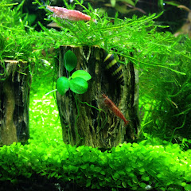

Karim Aquariophilie TN
Passionné d'aquariophilie en Tunisie, Karim partage depuis plusieurs années ses bacs, ses réussites d'élevage et ses découvertes : crevettes Amano reproduites en eau salée, Red Cherry, Blue Velvet, Atya gabonensis, Ramirezi, Corydoras panda et escargots assassins.
Ce blog prolonge les vidéos avec des fiches détaillées et des conseils pratiques, pour les débutants comme pour les éleveurs confirmés. Le forum permet aux passionnés de s'entraider et d'échanger.
Élevage
Reproduction de crevettes et de poissons, de la ponte aux juvéniles, filmée étape par étape.
Aquascaping
Plantes gazonnantes, décors naturels et bacs plantés adaptés aux conditions tunisiennes.
Partage
Des astuces simples et peu coûteuses, comme les orties pour nourrir les crevettes.